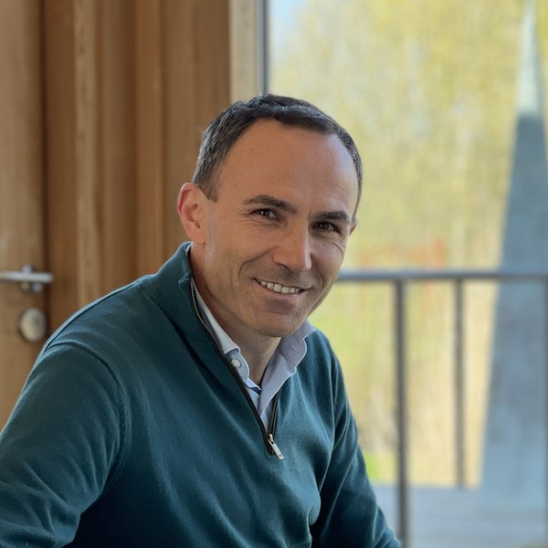
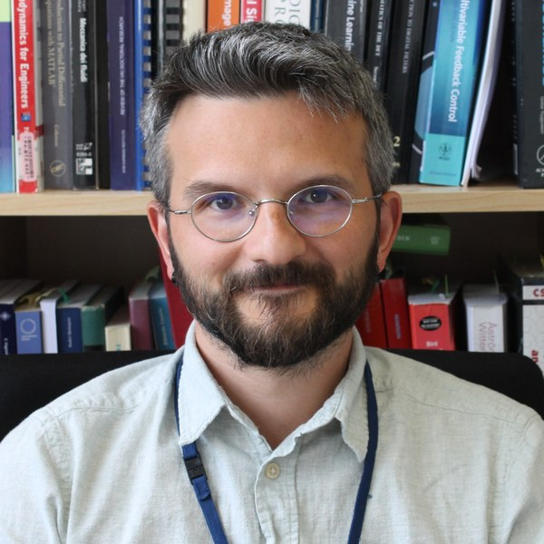
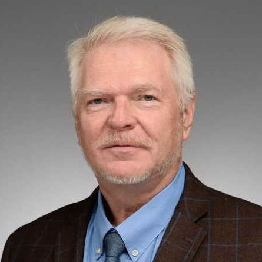
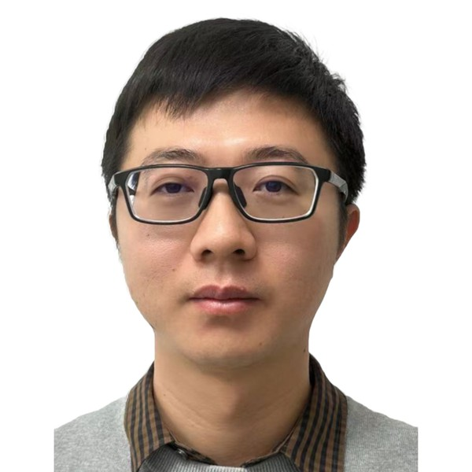

Eight plenary lectures will open the scientific sessions of ISFV22: the three award lectures and five invited plenary lectures. Speakers will be announced as they are confirmed, with name, affiliation, country, lecture title and abstract.

Leonardo da Vinci Memorial Lecture
Fulvio Scarano
Delft University of Technology, The Netherlands
Visualization of Flows and Surface Stresses: Where Do We Stand?
Asanuma Award Lecture
To be announced
Speaker and lecture title will be published once confirmed.

Carlomagno Award Lecture
Miguel A. Mendez
Université libre de Bruxelles and von Karman Institute for Fluid Dynamics, Belgium
Beyond the Grid: Meshless Analysis and Modeling of Lagrangian Flow Data

Plenary lecture
Sergey B. Leonov
University of Notre Dame, USA
Application of Mie Scattering for Precision Visualization of High-Speed Flow Features

Plenary lecture
Yang Xu
Beihang University, China
Phosphorescence-Based Simultaneous Measurements of Velocity and Temperature
Plenary lecture
To be announced
Speaker and lecture title will be published once confirmed.
Plenary lecture
To be announced
Speaker and lecture title will be published once confirmed.
Plenary lecture
To be announced
Speaker and lecture title will be published once confirmed.
Flow visualization
Science in motion
Artistic representation of a line integral convolution (LIC) visualization of the wake of a fluidic pinball.Alicia Rodríguez-Asensio · Experimental Aerodynamics & Propulsion Lab, UC3MArtistic representation of a PIV flow visualization showing particles and vorticity.Luca Franceschelli · Experimental Aerodynamics & Propulsion Lab, UC3MArtistic representation of an instantaneous Stanton number map in a turbulent channel flow.Antonio Cuéllar · Experimental Aerodynamics & Propulsion Lab, UC3MArtistic impression of the spatial mode of the wall-parallel flow field downstream of a pulsed slot jet in crossflow.Rodrigo Castellanos · Experimental Aerodynamics & Propulsion Lab, UC3MVisualizing data structure: artistic impression of a manifold of extreme aerodynamic flows.Zhiyuan Wang · Experimental Aerodynamics & Propulsion Lab, UC3MArtistic representation of the dry residue of a respiratory drop imaged by fluorescence microscopy.Javier Martínez-Puig · Universidad Carlos III de Madrid